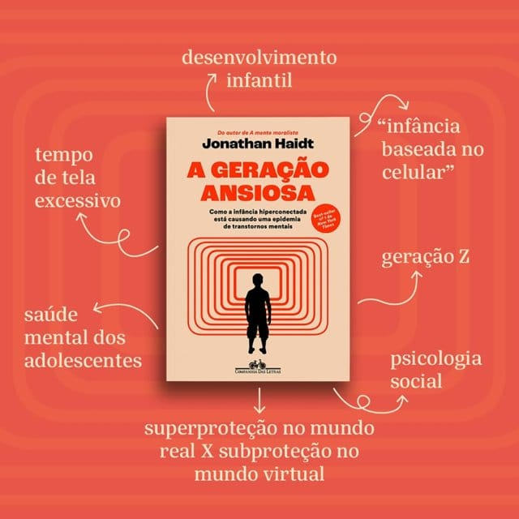

Off Web - Uso saudável de telas
Aprenda a usar telas de maneira saudável e entenda a psicologia por trás dos seus hábitos!
Bem-vindo(a) ao Off Web!Introduzindo
Seja muito bem-vindo ao Off Web! Nosso site tem como objetivo informar sobre os malefícios do uso excessivo de telas e ajudar os leitores a reduzirem seu tempo de exposição por meio de soluções dinâmicas. Além disso, nosso projeto se aprofunda em como elas afetam o cérebro.
O site conta com 9 páginas repletas de conteúdos
variados, como dados, notícias, o funcionamento do cérebro, dicas para se desconectar, sugestões de
atividades
, entre outros.
Esperamos que você aproveite ao máximo o conteúdo e que ele possa ajudar, seja qual for
o seu motivo para estar aqui. Todas as referências e fontes utilizadas estão disponíveis no próprio site.
Muito obrigado pela visita e boa sorte na sua jornada!

O que vamos abordar?


Nós podemos te ajudar ;)
O Off Web também disponibiliza formas diferentes de diminuir o tempo de tela
Tá afim de saber mais sobre?
Clica aqui!
Veja também :
-

Dilema das Redes
Dirigido por Jeff Orlowski, o documentário alerta sobre o perigo do impacto negativo das redes sociais no mundo, por especialistas do Vale do Silício.
- 
A Geração Ansiosa
Focado na juventude, o livro disserta sobre os problemas referentes a saúde mental dos jovens atualmente e faz sugestões de planos para uma infância sem telas.

{kind=link}